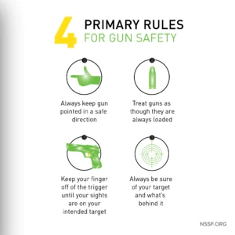

4 PRIMARY RULES OF FIREARM SAFETY

While youre at the shooting range or anywhere you handle a firearm safety ALWAYS comes first.
Here are the 4 Primary Rules of Firearms Safety.
This list is intended to emphasize the basics of safe firearm handling and secure storage and by
reminding you that you are the key to firearms safety.
You must constantly stress safety when handling firearms, especially to children and
non-shooters. Beginners, in particular, must be closely supervised when handling firearms with
which they may not be acquainted.
1. Always Keep Firearm Pointed in a Safe direction
Never point your gun at anything you do not intend to shoot. This is particularly important when
loading or unloading a firearm. In the event of an accidental discharge, no injury can occur as long
as the muzzle is pointing in a safe direction.
A safe direction means a direction in which a bullet cannot possibly strike anyone, taking into
account possible ricochets and the fact that bullets can penetrate walls and ceilings. The safe
direction may be “up” on some occasions or “down” on others, but never at anything not intended as a
target. Even when “dry firing” with an unloaded gun, you should never point the gun at an unsafe
target.
Make it a habit to know exactly where the muzzle of your gun is pointing at all times, and be sure
that you are in control of the direction the muzzle is pointing, even if you fall or stumble. This
is your responsibility, and only you can control it.
2. Treat All Guns as Though They are Loaded
By treating every firearm as if it is loaded, a habit of safety is developed. Firearms should be
loaded only when you are in the field or on the target range or shooting area, ready to shoot.
Whenever you handle a firearm, or hand it to someone, always open the action immediately, and
visually check the chamber, receiver and magazine to be certain they do not contain any ammunition.
Always keep actions open when not in use. Never assume a gun is unloaded — check for yourself! This
is considered a mark of an experienced gun handler!
3. Keep Your Finger Off the Trigger until You are Ready to Shoot
Never touch the trigger on a firearm until you actually intend to shoot. Keep your fingers away from
the trigger while loading or unloading. Never pull the trigger on any firearm with the safety on the
“safe” position or anywhere in between “safe” and “fire.” It is possible that the gun can fire at
any time, or even later when you release the safety, without you ever touching the trigger again.
4. Always Be Sure of Your Target and Whats Beyond It
Donot shoot unless you know exactly what your shot is going to strike. Be sure that your bullet will
not injure anyone or anything beyond your target.
Be aware that even a .22 short bullet can travel over 1 1/4 miles and a high velocity cartridge,
such as a .30-06, can send its bullet more than three miles. Shotgun pellets can travel 500 yards,
and shotgun slugs have a range of over half a mile.
You should keep in mind how far a bullet will travel if it misses your intended target or ricochets
in another direction.
Follow the safety procedures outlined here, develop safe shooting habits, and remember, firearm
safety is up to you.